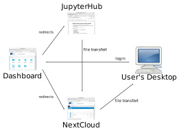

class: center, middle, titlepage # Introduction to Data-Interpolating Variational Analysis Alexander Barth, Charles Troupin, Aida Alvera-Azcárate, and Jean-Marie Beckers Link to these slides: https://tinyurl.com/DIVAnd-VRE GHER, University of Liège, Belgium    --- # What is DIVA?  * DIVA: Data Interpolating Variational Analysis * Objective: __derive a gridded climatology from in situ observations__ * The variational inverse methods aim to derive a continuous field which is: * __close to the observations__ (it should not necessarily pass through all observations because observations have errors) * "__smooth__" * Formalized via a cost function: $$ J[\varphi] = \sum\_{j=1}^{N\_d} \mu\_{j}[d\_{j}-\varphi({\mathbf x}\_{j})]^{2} + \|| \varphi- \varphi\_{b} \|| ^{2} $$ where $d\_{j}$ are the measurements at the location ${\mathbf x}\_j$ and their weights $\mu\_j$, $\varphi\_{b}$ is a background estimate of the field. --- # Topography * decouples basins based on __topography__ <img src="Fig/diva_odv_panama.png" style="width: 600px"> --- # Ocean currents <!--<img src="Fig/orca_test_divand_adv_point_2d.svg" style="width: 200px: float: right">-->  * __ocean currents__ can be taken into account * Background covariance (left panels) relative to the location marked by a cross and surrounding grid points and background variance (right panels). The upper (lower) panels corresponds to the case without (with) advection constrain. --- # Error variance estimation * consistent __error variance estimation__ --- # Outlier * can detect and remove __outliers__ --- # Ways to use DIVAnd  * Open source: https://github.com/gher-ulg/DIVAnd.jl * Integration with __Jupyter notebooks__ (SeaDataCloud Virtual Research Environment) * DIVA is integrated in __Ocean Data View__ * __REST interface__ in development * Play with DIVAnd: http://data-assimilation.net/Tools/divand_demo/html/ --- # Example: Chlorophyll-a data product  * 6-year running average (previously 10-year running average) analysis * Developed by AU-BIOS (Denmark), HCMR (Greece), Ifremer (France), NIMRD (Romania), SMHI (Sweden) * Only the interpolated field in the proximity of the observations is shown * Interpolated field on the full domain is available --- # DIVA updates * We aim to fully rewrite DIVA in __Julia__ (DIVAnd.jl) * Julia: good trade-off between __efficiency__ of a compiled language and __flexibility__ of a dynamic language * Facilitate the installation: * Use __Jupyter notebooks__ fully configured environment for DIVAnd.jl * __Docker container__ allows one to easily replicate these environments ---  --- # Jupyter notebooks  * Integrated web environment * __Computing__ * Interactive * *Ju*lia, *Py*thon, *R*,... * __Visualization__ * __Documentation__ * High-quality type setting and equations (Latex) * Export to HTML and PDF (among others) * Easy to __share__, on e.g. nbviewer.jupyter.org and github.com * Facilitate __reproducibility__ and peer-review (of DIVA climatologies in particular) * Significant community around Jupyter notebooks * Also involvement of players outside of the scientific community (Google, Microsoft with Azure ML) * Jupyter notebooks: __single__ user --- # Jupyter architecture  <!-- # Jupyterhub * __Multiple users__ * Web-proxy in front of jupyter * __Authentication__: * OAuth, LDAP, ... * __Isolation__: * Systemd-nspawn (light-weight namespace containers in Linux), Docker containers, ... --> --- # Jupyterhub architecture Jupyterhub: __multiple__ users  --- # Overview * Overview of main compenets in the Virtual research environement used during this workshop  --- # Jupterhub * __Docker containers__, preinstalled with Julia and various Julia packages: * Plotting library (PyPlot) and a more specialized library for ocean data * DIVAnd * ... * Julia packages are precompiled * Transfer files via __WebDAV__ in Julia: * Using explicit download and upload requests <!-- <video autoplay loop> <source src="Fig/notebook.webm" type='video/webm; codecs="vp8, vorbis"' /> <source src="Fig/notebook.mp4" type='video/mp4; codecs="avc1.42E01E, mp4a.40.2"' /> </video> --> --- class: middle # Conclusions * New approach to generate DIVA climatologies using a cloud computing infrastructure * Template of jupyter notebooks are be provided which users can adapt * Improve the __consistency__ between product * Facilitate __reproducibility__ * Jupyter notebook is not a software specific to SeaDataCloud * Users might already be familiar with Jupyter notebooks * But if not, learning to work with Jupyter notebooks can also be useful in other contexts * Jupyterhub: * Docker allows to provide a __standardized computing environment__ to all users * The jupyter notebook can be used to fully __document the generation of the climatology__ <!---* Some limiations remain: * Need a persistent connection, no possibility to reconnect to a running session--> <!-- https://github.com/jupyter/notebook/issues/1150 -->